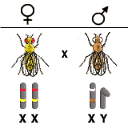
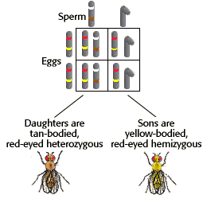

Sex-Linked Inheritance Problem Set 2
Problem 3: A fly cross involving two X-linked traits
Tutorial to help answer the question
|
What offspring would you expect from a cross between the female Drosophila described in problem 1 (red eyes and a yellow body, homozygous recessive for the yellow body color allele and homozygous dominant for the eye color allele) and the male described in problem 2 (hemizygous for both the recessive (white) eye color allele and dominant (tan) body color allele?) A reminder that the alleles for eye color and for body color are on the X chromosome of Drosophila, but not on the Y. Red eye color (w+) is dominant to white eye color (w), and tan body color (y+) is dominant to yellow body color (y). |
Genotypes and phenotypes of parents
|
The tan-bodied, white-eyed male is hemizygous for both the recessive white-eye color and the dominant tan-body color. |
 |
Genotypes and phenotypes of offspring (F1)
|
Since the alleles for eye color and for body color are on the X chromosome of Drosophila, the sons inherit these traits from the mother only. Their phenotype is the same as that of the mother. |
 |


University of Arizona
Updated: July 15, 1999
Contact the Development Team
http://www.biology.arizona.edu
All contents copyright © 1996-99. All rights reserved.